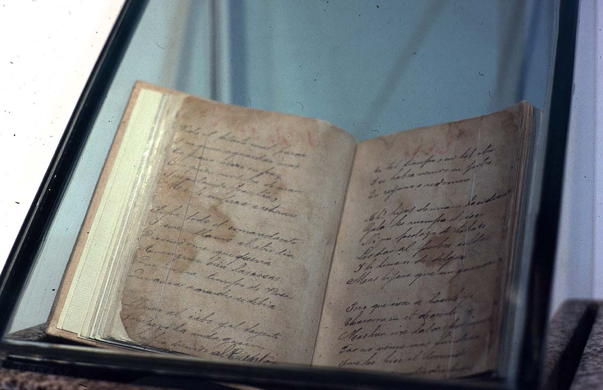

|
|  |
|
José Hernández, Martín Fierro (manuscript, Museo HIstórico Nacional, Buenos Aires)
|
The end of the nineteenth century, however, also marked the beginning of a traditionalist or folkloric concern for local customs and habits, which the grand narrative of 'fossil nationalism' had more or less explicitely relegated to the 'prehistory' of the nation. In a defensive reaction against the 'cosmopolitan habits' that were flooding the port-cities, Creole elites in Argentina and Chile rediscovered the values of an idealised countryside, imagined as a world of clear-cut hierarchies and gender relations. Paradoxically, José Hernández's gaucho poem Martín Fierro –a violent and bitter portrayal of rural crisis that decried the end of such an order, if in fact one had ever existed– was elevated by critics such as Ernesto Quesada and Ricardo Rojas to the status of a national epic: 'the popular' was canonised, but only to the extent that it could be stripped of its contestatary or subversive elements. Indeed, contemporary 'gauchesque theatre' and dime literature was dismissed by Quesada and others as 'barbarous' and 'vile' (just as Martín Fierro itself had been rejected by the porteño literary scene in 1872 for its linguistic 'deficiencies').
|